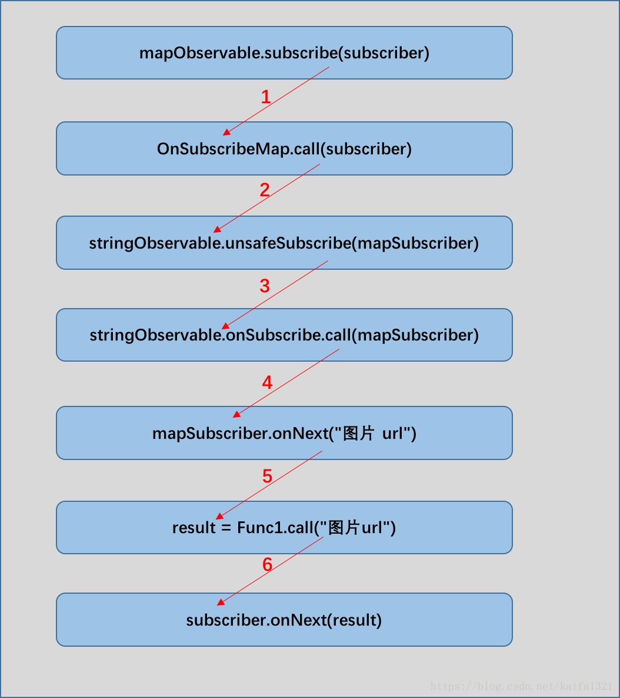
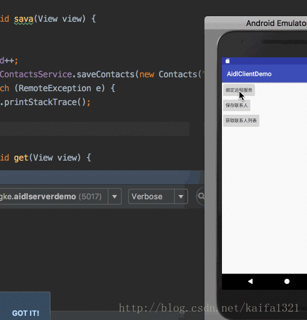

RxJava源码分析(2) 变换原理
RxJava源码分析基于RxJava1.3.8。
在上一章节中，主要介绍了RxJava的基本使用并对该部分的源码做了详细分析。在这一章节中，将主要介绍RxJava的另一大核心功能：变换。
变换，就是将事件序列中的对象或整个序列进行加工处理，转换成不同的事件或事件序列。
在RxJava中，提供了许多针对不同场景实现变换功能的操作符，如下：
- map()
- flatMap(), concatMap(), and flatMapIterable()
- switchMap()
- scan()
- groupBy()
- buffer()
- window()
- cast()
虽然，RxJava中提供了如此多的变换操作符，但是变换的原理基本都是一致的。在本章节将主要针对map()和flatMap()操作符来分析变换的原理。map变换
实例
需求，根据图片url实现ImageView图片的加载
以下通过RxJava实现该操作：1234567891011121314151617181920Observable.create(new Observable.OnSubscribe<String>() {@Overridepublic void call(Subscriber<? super String> subscriber) {// 1、传入图片路径subscriber.onNext("http://localhost:8080/...");}}).map(new Func1<String, Bitmap>() {@Overridepublic Bitmap call(String s) {// 2、根据图片路径获取Bitmp并返回Bitmap bitmap = getImageBitmap(s);return bitmap;}}).subscribe(new Action1<Bitmap>() {@Overridepublic void call(Bitmap bitmap) {// 3、ImageView设置BitmapimageView.setImageBitmap(bitmap);}});
在上面RxJava代码中，功能很清晰就是通过url实现图片的加载的流程，并且这里就完成了一个变换的过程：我们只传入了一个图片url，但在map方法中完成图片url到Bitmap转换的过程，最终在Action1.call(Bitmap)中只需要设置bitmap给ImageView即可。
所以在上述流程中，map(Func1)是完成变换的核心方法，下面我们就对该方法的源码做具体分析。
为了便于上述代码的分析，我们将上面链式调用的代码改成非链式调用的代码，这要能更清楚的展示两个Observable对象：stringObservable和mapObservable，如下：12345678910111213141516171819202122Observable<String> stringObservable = Observable.create(new Observable.OnSubscribe<String>() { @Override public void call(Subscriber<? super String> subscriber) { // 1、传入图片路径 subscriber.onNext("http://localhost:8080/..."); }});Observable<Bitmap> mapObservable = stringObservable.map(new Func1<String, Bitmap>() { @Override public Bitmap call(String s) { // 2、根据图片路径获取Bitmp并返回 Bitmap bitmap = getImageBitmap(s); return bitmap; }});mapObservable.subscribe(new Action1<Bitmap>() { @Override public void call(Bitmap bitmap) { // 3、ImageView设置Bitmap imageView.setImageBitmap(bitmap); }});
map操作符源码分析
首先，我们看下map(Func1)方法的具体实现，如下：1234public final <R> Observable<R> map(Func1<? super T, ? extends R> func) { // 创建一个Observable对象并返回 return unsafeCreate(new OnSubscribeMap<T, R>(this, func));}
关于unsafeCreate()方法在上一章节已经讲解过，这里就不在重复了。
在map(Func1)方法中，主要有两个功能：
创建并返回Observable对象，对于该Observable对象这里称之为mapObservable对象。
为mapObservable对象创建了一个OnSubscribe对象，也就是OnSubscribeMap对象（OnSubscribeMap对象是实现变换以及链式调用的核心）
在通过map(Func1)方法创建并返回mapObservable对象后，该mapObservable就通过调用subscribe()方法开始整个事件。
根据上章节对subscribe()方法的分析可知：在subscribe()方法内部会调用对应Observable对象（这里就是mapObservable对象）的onSubscribe.call()方法。而在mapObservable对象中onSubscribe实际就是指OnSubscribeMap对象，所以接下来就需要看看该类都做了些什么。
OnSubscribeMap
OnSubscribeMap源码如下：123456789101112131415161718192021222324252627282930313233343536public final class OnSubscribeMap<T, R> implements OnSubscribe<R> { final Observable<T> source; final Func1<? super T, ? extends R> transformer; /** * 1、构造方法 * * @param source 变换前Observable对象，也就是stringObservable * @param transformer Func1对象，通过map方法传入的参数 */ public OnSubscribeMap(Observable<T> source, Func1<? super T, ? extends R> transformer) { this.source = source; this.transformer = transformer; } /** * 开始事件的方法 * * @param o 观察者对象，该参数就是通过subscribe()方法传入的参数 */ @Override public void call(final Subscriber<? super R> o) { // 创建观察者对象，MapSubscriber MapSubscriber<T, R> parent = new MapSubscriber<T, R>(o, transformer); // 将创建的观察者对象添加到定于列表中 o.add(parent); // 调用方法，这是整个事件的开始 source.unsafeSubscribe(parent); } static final class MapSubscriber<T, R> extends Subscriber<T> { // 该内部类稍后在讲解 }}
这里，我们需要关注的是call()方法，在call()方法内部，最终会通过source.unsafeSubscribe(parent)开始整个事件的链式调用。
这里，我们看下source.unsafeSubscribe(parent)方法的内部实现12345678910111213public final Subscription unsafeSubscribe(Subscriber<? super T> subscriber) { try { subscriber.onStart(); /** * 1、通过onObservableStart()方法获取OnSubscribe对象，也就是创建stringObservable对象是传入的OnSubscribe对象 * 2、调用OnSubscribe对象的call方法 */ RxJavaHooks.onObservableStart(this, onSubscribe).call(subscriber); return RxJavaHooks.onObservableReturn(subscriber); } catch (Throwable e) { // 省略部分代码 }}
对于source变量，在OnSubscribeMap代码中就提到过，source变量就是指向引用stringObservable对象，这样虽然是通过mapObservable对象先调用subscribe()方法，但是最终还是stringObservable调用了subscribe()方法，这样也就保证了链式调用始终是从上而下执行的。
MapSubscriber
在上面的流程中，我们仅仅完成了链式调用的第一步，也就是stringObservable完成了call方法的调用，那么变换又是如何实现的呢？
在stringObservable.call(Subscriber)方法调用时，我们需要注意此时call(Subscriber)方法中传入的参数实际已经变成了MapSubscriber（看OnSubscribeMap.call()方法）。
MapSubscriber是OnSubscribeMap的一个静态内部类并且该类继承自Subscriber，所以它是一个观察者。
MapSubscriber类代码如下：12345678910111213141516171819202122232425262728293031323334353637383940414243444546474849505152535455565758596061static final class MapSubscriber<T, R> extends Subscriber<T> { final Subscriber<? super R> actual; final Func1<? super T, ? extends R> mapper; boolean done; /** * 构造方法 * @param actual 观察者对象，也就是subscribe()方法传入的参数 * @param mapper Func1对象，通过map方法传入的参数 */ public MapSubscriber(Subscriber<? super R> actual, Func1<? super T, ? extends R> mapper) { this.actual = actual; this.mapper = mapper; } @Override public void onNext(T t) { R result; try { // 1、调用Func1对象的call方法，实现事件变换 result = mapper.call(t); } catch (Throwable ex) { Exceptions.throwIfFatal(ex); unsubscribe(); onError(OnErrorThrowable.addValueAsLastCause(ex, t)); return; } // 2、完成变换后，将变换后的结果传入到下一个观察者 actual.onNext(result); } @Override public void onError(Throwable e) { if (done) { RxJavaHooks.onError(e); return; } done = true; actual.onError(e); } @Override public void onCompleted() { if (done) { return; } actual.onCompleted(); } @Override public void setProducer(Producer p) { actual.setProducer(p); }}
根据上述代码可知：MapSubscriber.onNext()方法就是实现变换的核心。在该方法中会根据传入的原始参数并通过Func1.call(t)完成变换功能，最终将变换的结果传递到下一个事件中去。
这里，我们可以通过一张图来描述上述整个过程：

flatMap变换
flatMap操作符：使用一个指定的函数对原始Observable发射的每一项数据执行变换操作，这个函数返回一个本身也发射数据的Observable，然后FlatMap合并这些Observables发射的数据，最后将合并后的结果当做它自己的数据序列发射。
实例演示
需求：输入学生列表中的每个学生的具体课程名称
通过RxJava代码实现：
同样的，为了便于分析源码，我们将上面链式调用的源码改为非链式调用的源码，如下：12345678910111213Observable<Student> fromObservable = Observable.from(students);Observable<Course> flatMapObservable = fromObservable.flatMap(new Func1<Student, Observable<Course>>() { @Override public Observable<Course> call(Student student) { return Observable.from(student.courseList); }});flatMapObservable.subscribe(new Action1<Course>() { @Override public void call(Course course) { System.out.println(course.courseName); }});
flatMap操作符源码分析
创建flatMapObservable
首先，我们看下flatMapObservable的创建过程，内部代码如下：1234567891011121314151617181920212223242526272829303132333435363738394041424344454647484950515253545556575859606162/** * 开始变换 * * @param func * @param <R> * @return */public final <R> Observable<R> flatMap(Func1<? super T, ? extends Observable<? extends R>> func) { if (getClass() == ScalarSynchronousObservable.class) { return ((ScalarSynchronousObservable<T>)this).scalarFlatMap(func); } /* * 1、通过map(func)方法创建一个Observable对象，该对象的onSubscribe类型为OnSubscribeMap * 2、通过merge()方法创键创建一个新的Observable对象,并返回最终通过该Observable调用subscribe()方法 */ return merge(map(func));}/** * 创建变换后的Observable对象 * * @param source 通过map(func)方法创建一个Observable对象，改对象的onSubscribe类型为OnSubscribeMap * @return */public static <T> Observable<T> merge(Observable<? extends Observable<? extends T>> source) { if (source.getClass() == ScalarSynchronousObservable.class) { return ((ScalarSynchronousObservable<T>)source).scalarFlatMap((Func1)UtilityFunctions.identity()); } /* * 1、OperatorMerge.<T>instance(false)获取一个OperatorMerge(HolderNoDelay.INSTANCE)对象，该对象实际就是一个Func1 * * 2、通过map(func)创建的Observable对象调用lift()方法 */ return source.lift(OperatorMerge.<T>instance(false));}/* * 1、通过map(func)创建的Observable对象调用lift()方法 * * @param operator OperatorMerge.<T>instance(false)获取一个OperatorMerge对象，该对象实际就是一个Func1 * @param <R> * @return */public final <R> Observable<R> lift(final Operator<? extends R, ? super T> operator) { /* * 这里onSubscribe实例是OnSubscribeMap */ return unsafeCreate(new OnSubscribeLift<T, R>(onSubscribe, operator));}/** * 最终通过flatMap()方法创建的Observable，该类的onSubscribe类型为OnSubscribeLift * * @param f * @param <T> * @return */public static <T> Observable<T> unsafeCreate(OnSubscribe<T> f) { return new Observable<T>(RxJavaHooks.onCreate(f));}
在flatMap操作符下，将创建一个新的Observable对象，该对象的onSubscribe对象实例为OnSubscribeLift，最终在该Observable.subscribe()方法调用时OnSubscribeLift.call()会被调用。
接下来，就来看下订阅的过程吧。
flatMapObservable订阅事件
完成了flatMapObservable变换Observable的创建后，就要调用订阅方法subscribe()了，如下：123456flatMapObservable.subscribe(new Action1<Course>() { @Override public void call(Course course) { System.out.println(course.courseName); }});
过在上一章节中的介绍，我们了解到flatMapObservable.subscribe(subscriber)调用时，内部会调用flatMapObservable.onSubscribe.call(subscriber)，这里就需要确定flatMapObservable.onSubscribe的具体类型了。
由上面flatMapObservable的创建可知，flatMapObservable.onSubscribe的具体类型就是lift()方法中创建的OnSubscribeLift。
OnSubscribeLift源码如下：12345678910111213141516171819202122232425262728293031323334public final class OnSubscribeLift<T, R> implements Observable.OnSubscribe<R> { /** * parent类型，就是创建fromObservable时，创建的OnSubscribe对象 * * OnSubscribeMap类型， */ final Observable.OnSubscribe<T> parent; /** * OperatorMerge(HolderNoDelay.INSTANCE)对象 */ final Observable.Operator<? extends R, ? super T> operator; public OnSubscribeLift(Observable.OnSubscribe<T> parent, Observable.Operator<? extends R, ? super T> operator) { this.parent = parent; this.operator = operator; } @Override public void call(Subscriber<? super R> o) { try { // 创建一个MergeSubscriber，该对象被被o持有 Subscriber<? super T> st = RxJavaHooks.onObservableLift(operator).call(o); try { st.onStart(); // OnSubscribeMap.call()被调用，这个里面其实就map操作符转换的结果 parent.call(st); } catch (Throwable e) { // .... } } catch (Throwable e) { // .... } }}
在OnSubscribeLift.call(Subscriber)方法中，最终会调用parent.call(st)，这个parent就是fromObservable.onSubscribe对象，这里指的就是OnSubscribeMap对象，这样RxJava链式调用的第一步就完成了，其实还是map()操作符的变换。
然而，与普通map操作符不同的是，在parent.call(st)方法中传入的参数为MergeSubscriber，这个参数最终会被MapSubscriber对象持有并在onNext()方法中被调用到。
MergeSubscriber源码如下（该方法过长，这里就看下onNext方法），这个对象的作用是将完成转化的序列（这是是指Observable序列）依次发射出去并最终被调用。12345678910111213141516171819202122232425static final class MergeSubscriber<T> extends Subscriber<Observable<? extends T>> { // 通过onNext的参数就能知道，这个是处理转换后的Observable @Override public void onNext(Observable<? extends T> t) { if (t == null) { return; } if (t == Observable.empty()) { emitEmpty(); } else if (t instanceof ScalarSynchronousObservable) { tryEmit(((ScalarSynchronousObservable<? extends T>)t).get()); } else { // 1、创建一个Subscriber InnerSubscriber<T> inner = new InnerSubscriber<T>(this, uniqueId++); // 2、通过addInner()方法存储所有转换后的Subscriber,合并所有的Observable对象。 addInner(inner); t.unsafeSubscribe(inner); // 3、将转换后的序列发出并处理，这里最终会调用我们subscribe()方法中传入的Subscriber.onNext()方法。 emit(); } }}
这样关于flatmap变换操作的讲解就讲到这里了。
总结
通过map及flatMap操作符源码的分析可知，对于变换操作符的核心流程就是通过OnSubscribeLift类实现的。同时创建MapSubscribe及OnSubscribeMap这两个类，对于不同种类的变换不同的仅仅就是最终在OnSubscribeLift指定这两个类中具体的属性而已。
RxJava源码分析
概述
虽然RxJava2也发布了很长时间了，但是对于分析RxJava的工作原理，RxJava1的源码相对于RxJava2相对而言会容易很多（原因想必大家都很清楚，其实是因为RxJava2我也没有怎么用过，哈哈），所以对RxJava的源码分析依然选择使用RxJava1。
在本次RxJava的源码分析中，只针对开发中常用的也是必须掌握的操作符做具体分析，主要包括三方面：
- 基本使用
- 变换的原理
- 线程切换的原理
- 至于其他的一些不常用的操作符（RxJava中有大量的操作）就不过多分析了。
基本使用
|
|
上述代码就是RxJava中的最基本使用，这个基本使用主要包括：
- 通过Observable.create()创建一个Observable（被观察者）对象。
- 创建一个Observer(观察者)对象，也就是Subscriber对象。
- 通过Observable.subscribe()实现Observable-Observer的订阅。
- 在Observable.subscribe()方法内部产生一个事件，通过OnSubscribe.call产生事件。
- 最终通过Observer对象处理事件。
基本订阅
###源码分析
针对上文RxJava中的基本使用，这里会针对这个流程做源码分析。
subscribe方法
首先，在RxJava的调用流程中，Observable.subscribe()方法实现Observable和Observer的订阅，同时该方法也是整个RxJava链式调用的起点，所以首先看看Observable.subscribe()的内部逻辑。123public final Subscription subscribe(Subscriber<? super T> subscriber) { return Observable.subscribe(subscriber, this);}
在上面方法中，仅仅只是调用了subscribe(Subscriber123456789101112131415161718192021222324252627282930static <T> Subscription subscribe(Subscriber<? super T> subscriber, Observable<T> observable) { // 省略部分代码 // 1、初始化方法，内部没有任何实现 subscriber.onStart(); // 2、将参数subscriber包装成SafeSubscriber // SafeSubscriber主要保证subscriber完成调用后能被及时取消订阅，并且在onComplete()调用后无法在被调用 if (!(subscriber instanceof SafeSubscriber)) { // assign to `observer` so we return the protected version subscriber = new SafeSubscriber<T>(subscriber); } try { /** * 核心流程： * * 1、首先， RxJavaHooks.onObservableStart()方法获取OnSubscribe对象 * 2、然后，根据获取的OnSubscribe，调用该对象的call()方法，这里可以看到在call()方法中传入的subscriber对象就是在subscribe()方法传入的subscriber对象 * * 上面获取的OnSubscribe其实就是在创建Observable时通过create()方法创建的OnSubscribe对象 */ RxJavaHooks.onObservableStart(observable, observable.onSubscribe).call(subscriber); return RxJavaHooks.onObservableReturn(subscriber); } catch (Throwable e) { // 省略部分代码 }}
在subscribe()方法中，基本就完成了Observable对象和Subscriber的订阅，并通过OnSubscribe.call(Subscriber)开始整个链式调用。
在代码中，注释非常清晰，这里就不重复了。
这里需要注意的是通过RxJavaHooks获取OnSubscribe对象的流程，这里对RxJavaHooks.onObservableStart()的调用流程做了下梳理，如下：12345678910111213141516171819202122232425262728293031323334353637public final class RxJavaHooks { // 1、定义一个Func2对象onObservableStart static volatile Func2<Observable, Observable.OnSubscribe, Observable.OnSubscribe> onObservableStart; // 2、静态代码块调用，实现初始化 static { init(); } // 3、初始化onObservableStart对象 static void init() { // 省略部分代码 onObservableStart = new Func2<Observable, Observable.OnSubscribe, Observable.OnSubscribe>() { @Override public Observable.OnSubscribe call(Observable t1, Observable.OnSubscribe t2) { // 在该代码中，默认返回方法参数的OnSubscribe对象 return RxJavaPlugins.getInstance().getObservableExecutionHook().onSubscribeStart(t1, t2); } }; } // 4、调用onObservableStart()，获取具体的OnSubscribe public static <T> Observable.OnSubscribe<T> onObservableStart(Observable<T> instance, Observable.OnSubscribe<T> onSubscribe) { Func2<Observable, Observable.OnSubscribe, Observable.OnSubscribe> f = onObservableStart; // 变量onObservableStart不会为空，所以会执行if判断语句 if (f != null) { // 该方法会返回参数onSubscribe，也就是Observable.OnSubscribe对象 return f.call(instance, onSubscribe); } return onSubscribe; }}
所以，通过上述流程发现最终获取的OnSubscribe对象，还是创建Observable对象时创建的那个OnSubscribe对象。
总结
这样关于RxJava的基本使用的源码分析就到这里了，这里面的核心流程也就是Subscriber.subscribe()方法，该方法是实现响应式编程的核心方法。
当然，在基本使用中对于Observerable.OnSubscribe类的作用并没有很突出，在下一章节中将主要讲解RxJava变换的原理。在变换的流程中就是要对Subscriber.subscribe()和Observerable.OnSubscribe两个方法的方法
Retrofit2源码分析(2) CallAdapter详解
本章节中将对Retrofit2中的CallAdapter机制做详细讲解。
在上一章节中曾提到了Call对象的创建是通过是通过ServiceMethod.adapt()完成的，这里在看看该方法的源码：
ServiceMethod.adapt()方法：123T adapt(Call<R> call) { return callAdapter.adapt(call);}
通过上述源码可知，最终Call对象是调用CallAdapter.adapt(Call)方法创建的，那么CallAdapter及具体的Call对象又是如何生成的呢？
带着这个疑问开始本章节。
Platform介绍
在上一章节Retrofit创建过程中知道，Retrofit创建时需要获取一个Platform对象，用于指定Retrofit运行的平台，这里我们看下Platform类，如下：123456789101112131415161718192021222324252627282930313233343536373839404142434445464748495051class Platform { // 1、创建Platform实例 private static final Platform PLATFORM = findPlatform(); // 2、获取Platform实例 static Platform get() { return PLATFORM; } // 3、创建Platform实例 private static Platform findPlatform() { try { // 通过反射查找是否存在Android平台的类， Class.forName("android.os.Build"); if (Build.VERSION.SDK_INT != 0) { return new Android(); } } catch (ClassNotFoundException ignored) { } try { Class.forName("java.util.Optional"); return new Java8(); } catch (ClassNotFoundException ignored) { } return new Platform(); } // 获取默认的回调执行器 @Nullable Executor defaultCallbackExecutor() { return null; } // 获取默认CallAdapter.Factory CallAdapter.Factory defaultCallAdapterFactory(@Nullable Executor callbackExecutor) { if (callbackExecutor != null) { return new ExecutorCallAdapterFactory(callbackExecutor); } return DefaultCallAdapterFactory.INSTANCE; } boolean isDefaultMethod(Method method) { return false; } @Nullable Object invokeDefaultMethod(Method method, Class<?> declaringClass, Object object, @Nullable Object... args) throws Throwable { throw new UnsupportedOperationException(); }}
从上面Platform的findPlatform()方法可知，Retrofit中支持Android和Java8两个平台。
我们看下Android平台的具体逻辑实现，也就是Platform.Android类：123456789101112131415161718192021222324static class Android extends Platform { // 1、获取默认的线程执行器，这里是主线程 @Override public Executor defaultCallbackExecutor() { return new MainThreadExecutor(); } // 2、获取默认的Factory @Override CallAdapter.Factory defaultCallAdapterFactory(@Nullable Executor callbackExecutor) { if (callbackExecutor == null) throw new AssertionError(); // 返回一个默认的Factory，也就是ExecutorCallAdapterFactory return new ExecutorCallAdapterFactory(callbackExecutor); } // 3、主线程回调执行器，用于完成线程切换 static class MainThreadExecutor implements Executor { // 创建主线程Handler， private final Handler handler = new Handler(Looper.getMainLooper()); @Override public void execute(Runnable r) { // 线程切换。 handler.post(r); } } }
在Platform.Android中复写了defaultCallAdapterFactory()和defaultCallbackExecutor()方法，这两个方法分别返回了一个默认的工厂和默认的主线程回调执行器。
这里可以明确下：在Android平台上默认的CallAdapter.Factory就是通过上面的defaultCallAdapterFactory()方法设置的，也就是说Android中默认的CallAdapter.Factory就是ExecutorCallAdapterFactory。
设置默认CallAdapterFactory
在Retrofit中默认的CallAdapter.Factory又是如何指定的呢？
这里我们看下Retrofit的创建过程，也就是Retrofit.Builder.build()方法，如下：
|
|
很清楚了吧，在Retrofit创建时会从Platform对象中获取默认的CallAdapter.Factory并设置，在Android平台中这个Factory就是指ExecutorCallAdapterFactory。
CallAdapter初始化
既然知道了Retrofit中默认的CallAdapter.Factory的是ExecutorCallAdapterFactory，那么接下来就需要看下ExecutorCallAdapterFactory是如何实现CallAdapter的创建的。
这里，再次看下ServiceMethod的adapt()方法中，如下：123T adapt(Call<R> call) { return callAdapter.adapt(call);}
在ServiceMethod中CallAdapter对象的初始化是在ServiceMethod.Builder.build()方法中通过调用createCallAdapter()方法实现的。
createCallAdapter()方法：1234567891011121314151617181920private CallAdapter<T, R> createCallAdapter() { // 1、获取接口方法的返回值类型 Type returnType = method.getGenericReturnType(); if (Utils.hasUnresolvableType(returnType)) { throw methodError( "Method return type must not include a type variable or wildcard: %s", returnType); } if (returnType == void.class) { throw methodError("Service methods cannot return void."); } // 2、获取该方法中所有的注解 Annotation[] annotations = method.getAnnotations(); try { // 3、获取CallAdapter对象，这个最终会通过工厂类Factory.get()方法实现，默认工行就是ExecutorCallAdapterFactory return (CallAdapter<T, R>) retrofit.callAdapter(returnType, annotations); } catch (RuntimeException e) { // Wide exception range because factories are user code. throw methodError(e, "Unable to create call adapter for %s", returnType); }}
在上面createCallAdapter()方法中最终会通过调用Retrofit.callAdapter()方法获取具体的CallAdapter.
这里看下Retrofit中callAdapter()方法：123456789101112131415161718192021public CallAdapter<?, ?> callAdapter(Type returnType, Annotation[] annotations) { return nextCallAdapter(null, returnType, annotations);}public CallAdapter<?, ?> nextCallAdapter(@Nullable CallAdapter.Factory skipPast, Type returnType, Annotation[] annotations) { checkNotNull(returnType, "returnType == null"); checkNotNull(annotations, "annotations == null"); int start = callAdapterFactories.indexOf(skipPast) + 1; for (int i = start, count = callAdapterFactories.size(); i < count; i++) { // 1、通过遍历的方式在工厂集合中根据网络接口定义的返回值类型找到合适的工厂。 // 2、通过指定工厂的get()方法获取具体CallAdapter CallAdapter<?, ?> adapter = callAdapterFactories.get(i).get(returnType, annotations, this); if (adapter != null) { return adapter; } }// 省略部分代码}
最终，CallAdapter会在Retrofit.nextCallAdapter()方法实现，该方法的功能主要就是：根据参数中网络接口的具体返回值类型找到对应的CallAdpater.Factory并最终通过调用Factory.get()方法获取CallAdapter对象。
ExecutorCallAdapterFactory类
在上文中对CallAdapter.Factory创建CallAdapter对象的流程做了具体分析，这里我们就要看下CallAdapter是如何创建Call对象的。
通过ServiceMethod.adapt()方法可知，CallAdapter获取具体Call主要是通过CallAdapter.adpat()方法实现的。
这里我们以默认的工厂ExecutorCallAdapterFactory生成的CallAdapter做具体分析下。
ExecutorCallAdapterFactory的源码如下：1234567891011121314151617181920212223242526272829303132333435363738394041424344454647484950515253545556575859606162636465666768697071727374757677787980818283848586878889909192939495969798final class ExecutorCallAdapterFactory extends CallAdapter.Factory { final Executor callbackExecutor; // 1、创建一个ExecutorCallAdapterFactory对象，指定主线程回调执行器 ExecutorCallAdapterFactory(Executor callbackExecutor) { this.callbackExecutor = callbackExecutor; } // 2、通过该刚发返回具体的CallAdapter对象 @Override public CallAdapter<?, ?> get(Type returnType, Annotation[] annotations, Retrofit retrofit) { if (getRawType(returnType) != Call.class) { return null; } // 获取网络接口接口返回类型 final Type responseType = Utils.getCallResponseType(returnType); // 创建一个CallAdapter实例 return new CallAdapter<Object, Call<?>>() { @Override public Type responseType() { return responseType; } // CallAdapter调用该方法返回具体Call实例 @Override public Call<Object> adapt(Call<Object> call) { // 创建具体的Call对象，这里是ExecutorCallbackCall return new ExecutorCallbackCall<>(callbackExecutor, call); } }; } // ExecutorCallbackCall类，该类中使用了委托模式 static final class ExecutorCallbackCall<T> implements Call<T> { final Executor callbackExecutor; // 在动态代理类创建过程中，delegate就是指OkHttpCall对象 final Call<T> delegate; ExecutorCallbackCall(Executor callbackExecutor, Call<T> delegate) { this.callbackExecutor = callbackExecutor; this.delegate = delegate; } // 实现异步请求 @Override public void enqueue(final Callback<T> callback) { checkNotNull(callback, "callback == null"); // 开始异步请求 delegate.enqueue(new Callback<T>() { @Override public void onResponse(Call<T> call, final Response<T> response) { // 获取异步请求后，执行线程切换 callbackExecutor.execute(new Runnable() { @Override public void run() { if (delegate.isCanceled()) { // Emulate OkHttp's behavior of throwing/delivering an IOException on cancellation. callback.onFailure(ExecutorCallbackCall.this, new IOException("Canceled")); } else { callback.onResponse(ExecutorCallbackCall.this, response); } } }); } @Override public void onFailure(Call<T> call, final Throwable t) { callbackExecutor.execute(new Runnable() { @Override public void run() { callback.onFailure(ExecutorCallbackCall.this, t); } }); } }); } @Override public boolean isExecuted() { return delegate.isExecuted(); } // 同步请求 @Override public Response<T> execute() throws IOException { return delegate.execute(); } @Override public void cancel() { delegate.cancel(); } @Override public boolean isCanceled() { return delegate.isCanceled(); } @SuppressWarnings("CloneDoesntCallSuperClone") // Performing deep clone. @Override public Call<T> clone() { return new ExecutorCallbackCall<>(callbackExecutor, delegate.clone()); } @Override public Request request() { return delegate.request(); } }}
在ExecutorCallAdapterFactory类中，主要就是复写了get()方法，在该方法中创建一个具体的CallAdpater对象并返回，而在该CallAdapter中adapt()方法创建了一个ExecutorCallbackCall的实例。
ExecutorCallbackCall是ExecutorCallAdapterFactory中定义的内部类，该类继承自Call对象，在该类中对重写了Call的enqueue()、execute()方法。
所以，最终我们执行网络接口方法时，实际上就是通过ExecutorCallbackCall实现的。
不明白的话，看下上章节基本使用中的示例代码，如下:1234ILoginService loginService = retrofit.create(ILoginService.class);//这个call对象实际就是ExecutorCallbackCall对象。Call<User> call = loginService.login(user);
这里，我们需要注意的是ExecutorCallbackCall异步方法，如下：1234567891011121314151617181920212223242526272829// 实现异步请求 @Override public void enqueue(final Callback<T> callback) { checkNotNull(callback, "callback == null"); // 开始异步请求 delegate.enqueue(new Callback<T>() { @Override public void onResponse(Call<T> call, final Response<T> response) { // 获取异步请求后，执行线程切换 callbackExecutor.execute(new Runnable() { @Override public void run() { if (delegate.isCanceled()) { // Emulate OkHttp's behavior of throwing/delivering an IOException on cancellation. callback.onFailure(ExecutorCallbackCall.this, new IOException("Canceled")); } else { callback.onResponse(ExecutorCallbackCall.this, response); } } }); } @Override public void onFailure(Call<T> call, final Throwable t) { callbackExecutor.execute(new Runnable() { @Override public void run() { callback.onFailure(ExecutorCallbackCall.this, t); } }); } }); }
在ExecutorCallbackCall中主要使用代理模式，在该类中持有一个OkHttpCall的实例，网络请求的实际过程都是在OkHttpCall中完成的。
在获取网络响应结果后，在ExecutorCallbackCall中会通过callbackExecutor实现线程切换，这里的callbackExecutor就是Platform.Android中定义的MainThreadExecutor也就是主线程回调执行器。最终我们的回调方法会在主线程中执行。
这就是为什么Retrofit异步请求回调方法在主线程中被调用的原因。
总结
关于CallAdapter的讲解就到此为止了。
其实在Retrofit中支持自定义CallAdapter.Factory实现自定义CallAdapter的功能。比如最流行的RxJava2CallAdapterFactory，通过RxJava2CallAdapterFactory可以实现Rxjava和Retrofit的结合，有兴趣的同学可以自行了解下。
Retrofit2源码分析
Retrofit是Java及Android平台上类型安全的Http客户端。这是官方给出关于Retrofit的简介。
这里需要明确：Retrofit只是一个Http网络请求封装库，该库的主要工作是对网络请求进行封装，最终实现网络请求的操作是由Okhttp完成的。
基本使用
使用Retrofit发起一次网络请求，只需要以下流程即可:
- 定义一个网络请求接口。
- 创建Retrofit实例
- 通过Retrofit创建网络请求接口的动态代理类
- 通过动态代理类获取Call对象，用于网络请求
- 通过Call对象实现网络请求(同步/异步)
代码演示：
1、定义一个网络请求接口实现用户登录功能12345public interface ILoginService { @POST("user/login") Call<User> Login(@Body User user);}
2、通过Retrofit完成网络请求123456789101112131415161718192021222324252627282930313233// 2、创建一个Retrofit对象Retrofit retrofit = new Retrofit.Builder() .baseUrl("http://localhost:8080/testRetrofit/") .addConverterFactory(GsonConverterFactory.create()) .addCallAdapterFactory(RxJava2CallAdapterFactory.create()) .build();// 3、通过Retrofit创建Retrofit的代理实例ILoginService loginService = retrofit.create(ILoginService.class);User user = new User();user.setUsername("jack");user.setPassword("123456");// 4、获取实现网络请求的Call对象Call<User> call = loginService.login(user);// 5、实现异步网络请求call.enqueue(new Callback<User>() { @Override public void onResponse(Call<User> call, Response<User> response) { // 获取用户信息 User body = response.body(); } @Override public void onFailure(Call<User> call, Throwable t) { }}); // 5、同步请求获取响应// Response<User> execute = call.execute();// User body = execute.body();
源码分析
针对上文中提到的Retrofit的使用流程，这里将对这些流程的源码逐一分析。
创建Retrofit实例
Retrofit实例的创建主要是通过内部类Retrofit.Buidler实现的。很明显，这里使用了建造者模式。
这里看下Builder的构造方法:123456789101112131415161718192021222324Builder(Platform platform) { this.platform = platform; } public Builder() { this(Platform.get());}Builder(Retrofit retrofit) { platform = Platform.get(); callFactory = retrofit.callFactory; baseUrl = retrofit.baseUrl; converterFactories.addAll(retrofit.converterFactories); // Remove the default BuiltInConverters instance added by build(). converterFactories.remove(0); callAdapterFactories.addAll(retrofit.callAdapterFactories); // Remove the default, platform-aware call adapter added by build(). callAdapterFactories.remove(callAdapterFactories.size() - 1); callbackExecutor = retrofit.callbackExecutor; validateEagerly = retrofit.validateEagerly;}
从源码可知，Retrofit有三个构造方法，但是两个具有包级访问权限，所以外部能使用的就只有无参数构造方法。
这种构造方法的设计和Okhttp是相同的。
在上面的无参构造方法中，内部通过Platform.get()方法获取一个Platform实例以完成Retrofit的创建。
Platform将在下章节中通CallAdapter一同讲解，这里只需要知道在Android平台中该Platform的作用就是提供一个CallAdapter工厂用于创建CallAdapter即可。
接着看下Builder.build()方法，build()方法主要是对Retrofit中一些属性做初始化操作。
Retrofit声明的属性12345678private final Map<Method, ServiceMethod<?, ?>> serviceMethodCache = new ConcurrentHashMap<>(); final okhttp3.Call.Factory callFactory; final HttpUrl baseUrl; final List<Converter.Factory> converterFactories; final List<CallAdapter.Factory> callAdapterFactories; final @Nullable Executor callbackExecutor; final boolean validateEagerly;
build()方法
|
|
其实，build()方法中主要就是完成了Retrofit的一些配置，这个从最后Retrofit的构造方法中可以看出。
设置baseUrl
在Retrofit实例的创建中，baseUrl为必填属性，这里我们看下Builder.baseUrl()的实现12345678910111213141516171819202122public Builder baseUrl(String baseUrl) { // 非空判断 checkNotNull(baseUrl, "baseUrl == null"); // 根据传入的url生成一个HttpUrl对象，这个类主要是对http的url做一些封装 HttpUrl httpUrl = HttpUrl.parse(baseUrl); if (httpUrl == null) { throw new IllegalArgumentException("Illegal URL: " + baseUrl); } return baseUrl(httpUrl);}public Builder baseUrl(HttpUrl baseUrl) { checkNotNull(baseUrl, "baseUrl == null"); // 下面整个逻辑判断传入的url是否是以"/"结尾 List<String> pathSegments = baseUrl.pathSegments(); if (!"".equals(pathSegments.get(pathSegments.size() - 1))) { throw new IllegalArgumentException("baseUrl must end in /: " + baseUrl); } this.baseUrl = baseUrl; return this;}
在上面baseUrl()方法中可知，url必须要以“/”结尾,这个也是在使用Retrofit中必须要注意的一点。
创建网络接口代理类
在Retrofit.create()中主要使用到了Java动态代理，如果对动态代理的实现机制不清楚的话，请自行学习，这里就不对动态代理做深入分析了。
在完成了Retrofit实例的创建后，就要通过Retrofit.create()方法创建一个网络请求代理类，这个类根据定义的网络请求接口生成。1ILoginService loginService = retrofit.create(ILoginService.class);
这里看下Retrofit.create()方法的具体实现:1234567891011121314151617181920212223242526272829303132333435public <T> T create(final Class<T> service) { // 1、首先判断类service是不是一个接口 Utils.validateServiceInterface(service); // 2、validateEagerly默认是false if (validateEagerly) { // 3、提前加载method,这个方法的内部会调用loadServiceMethod()方法，所以这个将会在下面的动态代理中一并讲解。 eagerlyValidateMethods(service); } // 4、创建service类的动态代理类实例 return (T) Proxy.newProxyInstance(service.getClassLoader(), new Class<?>[] { service }, new InvocationHandler() { private final Platform platform = Platform.get(); @Override public Object invoke(Object proxy, Method method, @Nullable Object[] args) throws Throwable { // 5、如果方法是来自对象的方法，则正常调用。像equal()、hashcode()等，在网络请求中这种情况一般不会发生。 if (method.getDeclaringClass() == Object.class) { return method.invoke(this, args); } // 6、在Android.Platform中isDefaultMethod()方法默认返回false，这里就忽略该方法。 if (platform.isDefaultMethod(method)) { return platform.invokeDefaultMethod(method, service, proxy, args); } // 7，这是动态代理方法中的核心，也是Retrofi他中的核心代码，这里将创建并最终返回网络请求调用的Call实例 ServiceMethod<Object, Object> serviceMethod = (ServiceMethod<Object, Object>) loadServiceMethod(method); OkHttpCall<Object> okHttpCall = new OkHttpCall<>(serviceMethod, args); return serviceMethod.adapt(okHttpCall); } }); }
这里，我们主要关注动态代理类的生成过程，即使用Proxy.newProxyInstance()创建实例的过程。
这里通过Proxy.newProxyInstance()对动态代理做个简单介绍：
通过该方法可以为指定接口（可以是多个接口）生成一个代理类的实例，每当调用接口的相关方法时，最终都会调用InvocationHandler类的invoke方法，而invoke方法的返回值就是接口方法的返回值。**
因此，在上面的动态代理invoke()方法中，最终会返回一个调用网络请求的Call对象，该对象就是在网络接口方法中指定的返回值。
获取网络请求Call实例
在上文中提到过，网络请求Call实例是在InvocationHandler的invoke中创建并返回的，也就是上文中的三行核心代码，这里把这三行代码拿出来单独分析。12345678// 1、获取ServiceMethod实例，ServiceMethod<Object, Object> serviceMethod = (ServiceMethod<Object, Object>) loadServiceMethod(method);// 2、获取OkhttpCall实例OkHttpCall<Object> okHttpCall = new OkHttpCall<>(serviceMethod, args);// 3、最终返回调用网络请求的实例return serviceMethod.adapt(okHttpCall);
创建ServiceMethod
首先，loadServiceMethod()方法会获取一个ServiceMethod对象，这个loadServiceMethod()方法主要是处理网络接口的注解，最终获取http请求相关的所有参数（url、请求头、请求响应解析器等）。
代码如下：1234567891011121314151617ServiceMethod<?, ?> loadServiceMethod(Method method) { // serviceMethodCache是一个LinkedHashMap，用于缓存ServiceMethod // LinkedHashMap内部使用了LRU算法 ServiceMethod<?, ?> result = serviceMethodCache.get(method); if (result != null) return result; synchronized (serviceMethodCache) { result = serviceMethodCache.get(method); if (result == null) { // 如果缓存中不存在，那么就根据method创建一个ServiceMethod并放入到缓存中，以便下次使用。 result = new ServiceMethod.Builder<>(this, method).build(); serviceMethodCache.put(method, result); } } return result;}
ServiceMethod类
在上文loadServiceMethod()方法中最终是通过new ServiceMethod.Builder<>(this, method).build()创建一个ServiceMethod实例的。
这里我们直接看ServiceMethod.Builder的构造方法和build()方法,如下：1234567891011121314151617181920212223242526272829303132333435363738394041424344454647484950515253545556575859606162636465666768697071727374757677787980818283848586878889Builder(Retrofit retrofit, Method method) { this.retrofit = retrofit; this.method = method; // 1、获取方法的注解 this.methodAnnotations = method.getAnnotations(); // 2、获取方法中参数的类型，这是一个Type[] this.parameterTypes = method.getGenericParameterTypes(); // 3、获取方法中每个参数的注解，这是一个二维数组Annotation[][] this.parameterAnnotationsArray = method.getParameterAnnotations();}public ServiceMethod build() { // 1、创建CallAdapter网络适配器，通过工厂方法创建 callAdapter = createCallAdapter(); // 2、获取网络响应体类型 responseType = callAdapter.responseType(); if (responseType == Response.class || responseType == okhttp3.Response.class) { // 这里可以看出响应体需要是ResponseBody throw methodError("'" + Utils.getRawType(responseType).getName() + "' is not a valid response body type. Did you mean ResponseBody?"); } // 3、创建响应解析器，通过工厂方法创建，创建过程和callAdapter方法类似 responseConverter = createResponseConverter(); // 4、解析网络接口方法的注解，所有作用于method的注解都在这里解析 // 例如(GET、POST、HTTP、Multipart、FormUrlEncoded、Headers等) for (Annotation annotation : methodAnnotations) { parseMethodAnnotation(annotation); } if (httpMethod == null) { // 必须设置Http请求类型 throw methodError("HTTP method annotation is required (e.g., @GET, @POST, etc.)."); } if (!hasBody) { if (isMultipart) { throw methodError( "Multipart can only be specified on HTTP methods with request body (e.g., @POST)."); } if (isFormEncoded) { throw methodError("FormUrlEncoded can only be specified on HTTP methods with " + "request body (e.g., @POST)."); } } // 5、获取网络接口方法的参数的数量 int parameterCount = parameterAnnotationsArray.length; // 6、创建一个数组，用于存储每个方法参数的注解等信息 parameterHandlers = new ParameterHandler<?>[parameterCount]; for (int p = 0; p < parameterCount; p++) { // 7、获取第p个参数的类型 Type parameterType = parameterTypes[p]; if (Utils.hasUnresolvableType(parameterType)) { throw parameterError(p, "Parameter type must not include a type variable or wildcard: %s", parameterType); } // 8、获取第p个该数上所有的注解 Annotation[] parameterAnnotations = parameterAnnotationsArray[p]; if (parameterAnnotations == null) { throw parameterError(p, "No Retrofit annotation found."); } // 9、根据参数及参数的注解生成一个ParameterHandler对象 // ParameterHandlers类中定义了不同注解的类，用于封装参数。 // 最终通过ParameterHandler.apply()方法将参数设置到RequestBuilder中 parameterHandlers[p] = parseParameter(p, parameterType, parameterAnnotations); } if (relativeUrl == null && !gotUrl) { throw methodError("Missing either @%s URL or @Url parameter.", httpMethod); } if (!isFormEncoded && !isMultipart && !hasBody && gotBody) { throw methodError("Non-body HTTP method cannot contain @Body."); } if (isFormEncoded && !gotField) { throw methodError("Form-encoded method must contain at least one @Field."); } if (isMultipart && !gotPart) { throw methodError("Multipart method must contain at least one @Part."); } // 10、创建ServiceMethod对象 return new ServiceMethod<>(this);}
这上面代码中对build()方法中的具体功能都做了说明，这里选取几个关键代码深入分析一下。
创建CallAdapter
首先，在build()方法中会通过createCallAdapter()方法获取CallAdapter网络适配器，这个是通过工厂方法生成的，如下：1234567891011121314151617181920private CallAdapter<T, R> createCallAdapter() { // 1、获取接口方法的返回值类型 Type returnType = method.getGenericReturnType(); if (Utils.hasUnresolvableType(returnType)) { throw methodError( "Method return type must not include a type variable or wildcard: %s", returnType); } if (returnType == void.class) { throw methodError("Service methods cannot return void."); } // 2、获取该方法中所有的注解 Annotation[] annotations = method.getAnnotations(); try { // 3、获取CallAdapter对象，这个最终会通过工厂类Factory.get()方法实现，具体实现在子类中如RxJava2CallAdapterFactory return (CallAdapter<T, R>) retrofit.callAdapter(returnType, annotations); } catch (RuntimeException e) { // Wide exception range because factories are user code. throw methodError(e, "Unable to create call adapter for %s", returnType); }}
CallAdapter机制将在下一章节中单独讲解，这里先简单介绍一下。
同样的createResponseConverter()方法创建响应转换器的过程也和createCallAdapter()过程是类似的。
初始化ParameterHandler数组
在build()方法中会获取网络接口参数及对应的注解类型，并将每个参数都根据注解类型封装成不同的ParameterHandler类，最终ParameterHandler数组主要用于RequestBuilder的创建。
该过程比较长，这里就不贴上代码了，可以自行通过build()方法第9个注释处查看具体代码。
创建OkHttpCall
OkHttpCall：就是对Okhttp中的Call做了一层封装，最终在OkHttpCall中会通过Okhttp.Call完成网络请求的操作
完成了ServiceMethod对象的创建后，在InvovationHandler.invoke()方法中就要通过ServiceMethdo对象和网络接口参数，创建一个OkHttpCall对象，这里看下OkHttpCall的构造方法：1234OkHttpCall(ServiceMethod<T, ?> serviceMethod, @Nullable Object[] args) { this.serviceMethod = serviceMethod; this.args = args; }
这个构造方法很简单，就是完成了两个属性的赋值操作。
OkHttpCall是实现网络请求的具体实现类，这个将在下文中具体分析。
在获取到ServiceMethod和OkHttpCall对象后，在Retrofit中将通过ServiceMethod的adapt(OkHttpCall)方法获取网络接口的动态代理对象。1serviceMethod.adapt(okHttpCall);
ServiceMethod.adapt()方法的内部很简单，通过具体的CallAdapter网络适配器获取Call对象，如下:123T adapt(Call<R> call) { return callAdapter.adapt(call);}
这样在整个Retrofit.create()方法中就通过动态代理完成了Call对象的获取，这样就可以使用OkHttpCall完成网络请求了。
CallAdapter机制将在下一章节中单独讲解，这里先简单介绍一下。
OkHttpCall实现同步异步请求
在通过网络接口获取了Call对象后，就可以开始完成网络请求了。
这个过程主要是通过Call的具体实现类OkHttpCall实现的，这里对实OkHttpCall的同步请求和异步请求的实现做具体分析。
同步请求方法execute
在获取了网络接口定义的Call对象后，要想实现同步请求只需要调用Call.execute()方法即可，这里根据上一章节中实例演示同步请求代码1234// 5、同步请求获取响应Response<User> execute = call.execute();// User body = execute.body();
OkHttpCall中的同步方法execute()的逻辑非常请求，主要包括：
- 创建一个okhttp3.Call实例
- 调动okhttp3.Call的同步方法execute获取响应
- 解析响应结果并返回
execute()方法如下：12345678910111213141516171819202122232425262728293031323334353637383940@Overridepublic Response<T> execute() throws IOException {// 1、定义一个okhttp的Call// 看到这里就很清晰了，Retrofit是通过okhttp完成网络请求的okhttp3.Call call;synchronized (this) {if (executed) throw new IllegalStateException("Already executed.");executed = true;if (creationFailure != null) {if (creationFailure instanceof IOException) {throw (IOException) creationFailure;} else if (creationFailure instanceof RuntimeException) {throw (RuntimeException) creationFailure;} else {throw (Error) creationFailure;}}call = rawCall;if (call == null) {try {// 2、创建okhttp中的call对象call = rawCall = createRawCall();} catch (IOException | RuntimeException | Error e) {throwIfFatal(e); // Do not assign a fatal error to creationFailure.creationFailure = e;throw e;}}}if (canceled) {call.cancel();}// 3、调用同步方法，并完成响应结果的解析return parseResponse(call.execute());}
创建okhttp3的Call对象
在上面execute()方法中，okhttp3.Call对象主要是通过createRawCall()方法创建的，这里看下该方法：1234567private okhttp3.Call createRawCall() throws IOException { okhttp3.Call call = serviceMethod.toCall(args); if (call == null) { throw new NullPointerException("Call.Factory returned null."); } return call; }
在该方法中，主要通过serviceMethod.toCall()方法完成okhttp3.Call对象的创建。
接下来，我们看下toCall()方法：1234567891011121314151617181920212223okhttp3.Call toCall(@Nullable Object... args) throws IOException { // 1、创建RequestBuilder对象，在该对象中将包装网络请求相关的参数 RequestBuilder requestBuilder = new RequestBuilder(httpMethod, baseUrl, relativeUrl, headers, contentType, hasBody, isFormEncoded, isMultipart); @SuppressWarnings("unchecked") // It is an error to invoke a method with the wrong arg types. ParameterHandler<Object>[] handlers = (ParameterHandler<Object>[]) parameterHandlers; int argumentCount = args != null ? args.length : 0; if (argumentCount != handlers.length) { throw new IllegalArgumentException("Argument count (" + argumentCount + ") doesn't match expected count (" + handlers.length + ")"); } // 2、网络请求接口参数封装到RequestBuilder对象中，这样可以获取整个网络请求完整的参数 for (int p = 0; p < argumentCount; p++) { handlers[p].apply(requestBuilder, args[p]); } // 3、通过RequestBuilder.build()方法创建okhttp3所需要的Request对象 // 4、最终通过CallFactory.newCall()创建okhttp3网络请求的Call对象（这个CallFactory对象就是在Retrofit创建时创建的OkHttpClient对象） return callFactory.newCall(requestBuilder.build());}
toCall方法的功能逻辑也很清晰：
封装所有网络请求参数到RequestBuilder
- RequestBuilder.build()方法将所有参数都解析成Okhttp3的网络参数的格式。并最终生成一个okhttp3.Request对象。
- 通过CallFactory也就是OkHttpClient对象创建一个Call实例。
- 这里需要注意的就是Retrofit中的RequestBuilder类，该类中实现了Retrofit到okhttp3的转换。
解析okhttp请求结果
当Retrofit通过okhttp3完成了同步请求后，在获取请求结果后，将会对该结果进行解析，最终将okhttp的结果转化成Retrofit的请求结果。
这里我们看下OkHttpCall.parseResponse()方法：1234567891011121314151617181920212223242526272829303132333435363738394041424344Response<T> parseResponse(okhttp3.Response rawResponse) throws IOException { // 1、获取okhttp中的响应体 ResponseBody rawBody = rawResponse.body(); // 这里会移除响应体，在处理一些错误时会使用Retrofit中定义的响应体，例如Response.error()方法 rawResponse = rawResponse.newBuilder() .body(new NoContentResponseBody(rawBody.contentType(), rawBody.contentLength())) .build(); // 2、获取响应码 int code = rawResponse.code(); // 异常结果处理 start if (code < 200 || code >= 300) { try { // 返回错误响应 ResponseBody bufferedBody = Utils.buffer(rawBody); return Response.error(bufferedBody, rawResponse); } finally { rawBody.close(); } } if (code == 204 || code == 205) { rawBody.close(); return Response.success(null, rawResponse); } // 异常结果处理 end // 3、对响应结果进行处理 ExceptionCatchingRequestBody catchingBody = new ExceptionCatchingRequestBody(rawBody); try { // 4、通过响应解析器将结果转化成对应的响应结果类 T body = serviceMethod.toResponse(catchingBody); // 5、获取具体Response类（body：网络请求接口中定义的结果类；rawResponse：okhttp3中解析的响应体） return Response.success(body, rawResponse); } catch (RuntimeException e) { // If the underlying source threw an exception, propagate that rather than indicating it was // a runtime exception. catchingBody.throwIfCaught(); throw e; } }
在parseResponse()方法中，主要通过serviceMethod.toResponse()方法将okhttp的响应体内容解析成网络接口中指定的类型，在这个方法中主要使用了响应解析器，如下：123R toResponse(ResponseBody body) throws IOException { return responseConverter.convert(body); }
最后通过Response.success(body, rawResponse)方法创建一个Response对象，该对象中封装了通过okhttp3获取的网络请求。1234567public static <T> Response<T> success(@Nullable T body, okhttp3.Response rawResponse) { checkNotNull(rawResponse, "rawResponse == null"); if (!rawResponse.isSuccessful()) { throw new IllegalArgumentException("rawResponse must be successful response"); } return new Response<>(rawResponse, body, null);}
这样整个同步请求就完成了。
异步请求方法enqueue
通过Call对象实现异步请求，只需要调用OkHttpCall.enqueue()方法即可：12345678910111213// 实现异步网络请求call.enqueue(new Callback<User>() { @Override public void onResponse(Call<User> call, Response<User> response) { // 获取用户信息 User body = response.body(); } @Override public void onFailure(Call<User> call, Throwable t) { }});
异步网络请求enqueue()方法内部的逻辑也非常清晰，基本和上文中同步请求的步骤一致，主要包括：
- 创建一个okhttp3.Call实例
- 调动okhttp3.Call的同步方法enqueue获取响应
- 解析响应结果
- 最终调用回调接口传递网络请求结果1234567891011121314151617181920212223242526272829303132333435363738394041424344454647484950515253545556575859606162636465@Overridepublic void enqueue(final Callback<T> callback) {checkNotNull(callback, "callback == null");okhttp3.Call call;Throwable failure;synchronized (this) {if (executed) throw new IllegalStateException("Already executed.");executed = true;call = rawCall;failure = creationFailure;if (call == null && failure == null) {try {// 1、创建okhttp3.Call对象call = rawCall = createRawCall();} catch (Throwable t) {throwIfFatal(t);failure = creationFailure = t;}}}if (failure != null) {callback.onFailure(this, failure);return;}if (canceled) {call.cancel();}// 2、调用okhttp3.Call的异步方法enqueue()call.enqueue(new okhttp3.Callback() {@Override public void onResponse(okhttp3.Call call, okhttp3.Response rawResponse) {Response<T> response;try {// 3、解析网络响应response = parseResponse(rawResponse);} catch (Throwable e) {callFailure(e);return;}try {// 4、调用回调方法callback.onResponse(OkHttpCall.this, response);} catch (Throwable t) {t.printStackTrace();}}@Override public void onFailure(okhttp3.Call call, IOException e) {callFailure(e);}private void callFailure(Throwable e) {try {callback.onFailure(OkHttpCall.this, e);} catch (Throwable t) {t.printStackTrace();}}});}
异步方法的主要逻辑基本在同步方法中讲过了，这里就不在介绍了。
总结
这样，整个Retrofit完成网络请求的流程的源码就都分析完了。
在该源码分析中，CallAdapter获取具体网络适配器的实现原理将会在下一章节中具体讲解。
Android IPC之Messenger源码分析
在Android IPC之Messenger一文中，对通过Messenger实现IPC的流程做了一个简单的介绍，在文中曾说到Messenger的底层也是通过AIDL实现的，这里通过Messenger的源码来看看AIDL是如何实现Messenger的。
Messenger实现IPC流程分析
Messenger源码分析
|
|
在上面的源码中，Messenger定义了一个IMessenger类型的成员变量mTarget，但是在java源码中看不到IMessenger类的相关信息，这是因为IMessenger是一个声明的aidl接口，我们可以通过android系统源码找到这个aidl接口文件，代码如下：1234567891011121314/** *文件路径： * * ../android-6.0.1_r72/frameworks/base/core/java/android/os/IMessenger.aidl */package android.os;import android.os.Message;/** @hide */oneway interface IMessenger { void send(in Message msg);}
在上面的源码中，我们可以看到IMessenger对象mTarget对象的初始化是通过调用 Handler.getIMessenger()完成的。123public Messenger(Handler target) { mTarget = target.getIMessenger();}
这里我们看下Handler中的getIMessenger方法。12345678910111213141516171819202122final IMessenger getIMessenger() { synchronized (mQueue) { if (mMessenger != null) { return mMessenger; } mMessenger = new MessengerImpl(); return mMessenger; }}/** * 最终，Messenger的send()方法，是在这里实现的， * 这里我们可以确实，Messenger实现IPC是通过Handler实现的 */private final class MessengerImpl extends IMessenger.Stub { public void send(Message msg) { // 这是一个本地方法，用于获取进程的Uid，保证在进程间通信 msg.sendingUid = Binder.getCallingUid(); // 调用handler的sendMessage方法实现IPC Handler.this.sendMessage(msg);}
这里，我们可以得出一个结论Messenger实现IPC的流程，底层是通过aidl文件实现的，同时handler也是Messenger实现IPC的关键类。
关于Handler，想必大多数人对于Handler的认识是停留在线程间通信的，至于Handler如何实现IPC这里只提一句，Handler在Native层中通过管道实现IPC通信
Android IPC之Binder源码分析
Binder是什么
图文详解 Android Binder跨进程通信机制 原理 一文中对Binder机制的原理讲解的比较清楚易懂，这里提供给大家参考。
AIDL中的Binder实现
在 Android AIDL实现进程间通信中，我们曾提到要想实现IPC，我们需要通过定义.aidl接口来实现。其实，创建.aidl文件的目的就是让SDK为为我们自动生成.aidl文件对应的java类，该类的主要核心就是Binder。
现在我们就主要对SDK系统生成的Java类进行分析一下。
这里是定义的IContactsService.aidl。12345678910111213141516// IContactsService.aidlpackage com.zhangke.aidlserverdemo;// Declare any non-default types here with import statementsimport com.zhangke.aidlserverdemo.Contacts;interface IContactsService { /** *保存联系人 */ int saveContacts(in Contacts contacts); /** *获取联系人列表 */ List<Contacts> getContactsList();}
下面是SDK自动生成的IContactsService.java类，该类继承自android.os.IInterface接口。
这里有几个主要的属性和方法:
- DESCTIPTOR：Binder的唯一标识
- asInterface()：返回客户端需要的AIDL接口类型的对象
- asBinder()：IInterface接口定义的方法，返回Binder对象
- onTransact()：IPC的核心方法，也是RPC(远程过程调用)的流程
- Proxy#saveContacts和Proxy#getContactsList：AIDL接口定义的方法，该方法也是提供给客户端调用的方法。123456789101112131415161718192021222324252627282930313233343536373839404142434445464748495051525354555657585960616263646566676869707172737475767778798081828384858687888990919293949596979899100101102103104105106107108109110111112113114115116117118119120121122123124125126127128129130131132133134135136137138139140141142143144145146147148149150151152153154155156157158159160161162163164165166167168169170171172173174175176177178179180181182183184185186187188/*** SDK生成的java类， 该类继承自android.os.IInterface接口*/public interface IContactsService extends android.os.IInterface {/*** 该类继承自Binder，并且实现了IContactsService接口，这里有方法的具体实现*/public static abstract class Stub extends android.os.Binder implements com.nstv.aidlserverdemo.IContactsService {private static final java.lang.String DESCRIPTOR = "com.nstv.aidlserverdemo.IContactsService";/*** 在服务中，一般都是通过创建该类，然后获取对应Binder引用*/public Stub() {/*** 将IContactsService接口和Binder关联起来*/this.attachInterface(this, DESCRIPTOR);}/*** 将Binder对象转换成与之对应的IContactsService接口对象，* IContactsService对象一般会在客户端被使用*/public static com.nstv.aidlserverdemo.IContactsService asInterface(android.os.IBinder obj) {if ((obj == null)) {return null;}/*** obj.queryLocalInterface(DESCRIPTOR)，该方法判断客户端和服务器是否是在同一进程，如果是同一个进程，则返回服务对象本身* 否则，会返回系统封装的Proxy对象*/android.os.IInterface iin = obj.queryLocalInterface(DESCRIPTOR);if (((iin != null) && (iin instanceof com.nstv.aidlserverdemo.IContactsService))) {return ((com.nstv.aidlserverdemo.IContactsService) iin);}return new com.nstv.aidlserverdemo.IContactsService.Stub.Proxy(obj);}/*** 该方法是android.os.IInterface接口中的方法，返回当前Binder对象* 一般在绑定服务的onBind()方法中，通过该方法返回Binder对象*/@Overridepublic android.os.IBinder asBinder() {return this;}/*** 核心方法* <p>* 1、该方法运行在服务端的Binder线程池中，当客户端发起请求后，服务端根据code参数确定客户端请求的具体方法*/@Overridepublic boolean onTransact(int code, android.os.Parcel data, android.os.Parcel reply, int flags) throws android.os.RemoteException {switch (code) {case INTERFACE_TRANSACTION: {reply.writeString(DESCRIPTOR);return true;}case TRANSACTION_saveContacts: {data.enforceInterface(DESCRIPTOR);com.nstv.aidlserverdemo.Contacts _arg0;if ((0 != data.readInt())) {/*** 2、通过data参数，获取客户端输入的参数*/_arg0 = com.nstv.aidlserverdemo.Contacts.CREATOR.createFromParcel(data);} else {_arg0 = null;}/*** 3、执行目标方法*/int _result = this.saveContacts(_arg0);reply.writeNoException();/*** 4、写入返回值*/reply.writeInt(_result);/*** 该返回值如果返回false，说明请求调用会失败*/return true;}case TRANSACTION_getContactsList: {data.enforceInterface(DESCRIPTOR);java.util.List<com.nstv.aidlserverdemo.Contacts> _result = this.getContactsList();reply.writeNoException();reply.writeTypedList(_result);return true;}}return super.onTransact(code, data, reply, flags);}/*** Stub的内部类，在客户端和服务端不是同一个进程时会使用*/private static class Proxy implements com.nstv.aidlserverdemo.IContactsService {private android.os.IBinder mRemote;Proxy(android.os.IBinder remote) {mRemote = remote;}@Overridepublic android.os.IBinder asBinder() {return mRemote;}public java.lang.String getInterfaceDescriptor() {return DESCRIPTOR;}@Overridepublic int saveContacts(com.nstv.aidlserverdemo.Contacts contacts) throws android.os.RemoteException {// 1、 创建输入参数和输出参数android.os.Parcel _data = android.os.Parcel.obtain();android.os.Parcel _reply = android.os.Parcel.obtain();int _result;try {_data.writeInterfaceToken(DESCRIPTOR);if ((contacts != null)) {// 2、写入输入型参数_data.writeInt(1);contacts.writeToParcel(_data, 0);} else {_data.writeInt(0);}/** 3、调用RPC请求，该过程会导致客户端线程挂起，然后服务端的onTransact()方法会被调用，* 直到RPC完成，客户端线程继续执行*/mRemote.transact(Stub.TRANSACTION_saveContacts, _data, _reply, 0);_reply.readException();// 4、获取RPC的返回结果，最终返回到客户端_result = _reply.readInt();} finally {_reply.recycle();_data.recycle();}return _result;}/*** 获取联系人列表*/@Overridepublic java.util.List<com.nstv.aidlserverdemo.Contacts> getContactsList() throws android.os.RemoteException {android.os.Parcel _data = android.os.Parcel.obtain();android.os.Parcel _reply = android.os.Parcel.obtain();java.util.List<com.nstv.aidlserverdemo.Contacts> _result;try {_data.writeInterfaceToken(DESCRIPTOR);mRemote.transact(Stub.TRANSACTION_getContactsList, _data, _reply, 0);_reply.readException();_result = _reply.createTypedArrayList(com.nstv.aidlserverdemo.Contacts.CREATOR);} finally {_reply.recycle();_data.recycle();}return _result;}}/*** 系统生成参数，用于确定请求方法*/static final int TRANSACTION_saveContacts = (android.os.IBinder.FIRST_CALL_TRANSACTION + 0);static final int TRANSACTION_getContactsList = (android.os.IBinder.FIRST_CALL_TRANSACTION + 1);}/*** 保存联系人** @param contacts* @return* @throws android.os.RemoteException*/public int saveContacts(com.nstv.aidlserverdemo.Contacts contacts) throws android.os.RemoteException;/*** 获取联系人列表*/public java.util.List<com.nstv.aidlserverdemo.Contacts> getContactsList() throws android.os.RemoteException;}
IInterface源码分析
|
|
Android IPC之Messenger
Messenger，主要用于进程间通信（以下简称“IPC”），这是实现IPC的最简单的方式。而且Messenger 会在单一线程中创建包含所有请求的队列，这样开发者不必对服务进行线程安全设计。换而言之，Messenger是处理单一线程的IPC方式。
这里可以多提一句，Messenger底层源码也是通过AIDL实现的。
如何使用Messeneger
服务端实现
- 在服务端创建一个Service，该Service提供给客户端远程绑定。
- 在Service中创建一个Handler对象，该Handler对象用于接收来自客户端的消息。
- 在Service中创建一个Messenger对象，该Messenger对象通过构造方法会持有Handler对象的应用。
- 在Service的onBind()方法中，返回IBinder对象。该对象通过Messenger.getBinder()方法获取。
客户端实现
- 在客户端远程绑定服务，并获取服务返回的IBinder对象。
- 创建一个Messenger对象，该Messenger对象会通过构造方法持有IBinder对象的应用。
- 通过调用Messenger对象send()方法，给服务端放松Message对象，完成数据通信。
通过以上的步骤就可以实现通过Messenger完成IPC的整个过程，但是该流程仅仅只支持单向通信（客户端发送消息到服务端）。
如果想通过Messenger对象完成双向通行（客户端、服务端互相发送消息），我们需要进一步完善上面的步骤。如下：
双向通行实现
- 在客户端创建一个Handler对象，该Handler对象用于接收来自服务端的消息。
- 在客户端创建一个Messenger对象，该Messenger对象通过构造方法会持有Handler对象的应用。
- 在客户端在向服务端发送Message时，将该Messenger赋值给message.replyTo属性。
- 服务端在通过服务端定义的Handler获取到Message，并通过Message.replyTo方法获取客户端创建的Messenger对象，通过send()方法可以给客户端发送消息。
以上就是通过Messenger实现Client/Server双向通信的整个流程。
实例演示
对于在android设备上实现调起微信或者支付宝实现第三方支付的场景相比大家并不陌生，在这里我们也通过Messenger来模拟这个流程。
服务端实现（模拟支付宝应用）
|
|
客户端实现
|
|
Android IPC之AIDL
AIDL,全称Android Interface Definition Language，也就是android接口定义语言。主要的作用是在客户端和服务端实现进程间通信（IPC）。
在 Android 上，一个进程通常无法访问另一个进程的内存。 尽管如此，进程需要将其对象分解成操作系统能够识别的原语，并将对象编组成跨越边界的对象。 编写执行这一编组操作的代码是一项繁琐的工作，因此 Android 会使用 AIDL 来处理。
使用AIDL的时机
通过AIDL实现IPC，主要是通过绑定服务实现。这里有三种方式可以实现绑定服务。
- 扩展Binder类。不需要进程间通信，使用该方式
- 使用Messenger。最简单的IPC方式，但是该实现方式是在单一线程中创建包含所有请求的队列，这样您就不必对服务进行线程安全设计。
- 使用AIDL。允许不同应用的客户端用 IPC方式访问服务，并且在服务中处理多线程时，使用AIDL。其实Messenger底层也是通过AIDL方式实现的
定义AIDL
服务端实现
要想通过AIDL创建绑定服务，在服务端要实现以下步骤：
- 创建.aidl文件。该文件主要定义IPC需要提供给客户端调用的方法。
- 根据.aidl文件生成一个与之同名的.java接口文件。此接口具有一个名为 Stub 的内部抽象类，用于扩展 Binder 类并实现 AIDL 接口中的方法。您必须扩展 Stub 类并实现方法。（.java接口文件由SDK工具自动生成）
- 创建向客户端公开的Service，并重写onBind()返回Stud类的具体实现，最终IPC将通过Stub类实现。
客户端实现（调用IPC方法）
- 在客户端加入所有服务端声明的.aidl文件并复制所有相关实现Parcelable接口的对象的类（所有对象类都必须放在和服务端相同的包名路径）
- 调用Context.bindService方法，并传入ServiceConnection对象。
- 在ServiceConnection.onServiceConnection()方法中会接收到一个IBinder对象，通过InterfaceName.Stub.asInterface((IBinder)service)获取InterfaceName对象。这里的InterfaceName就是指系统生成的和.aidl文件同名的.java类，该类中具体的IPC方法
- 完成相关操作后，通过Context.unBindService()解除绑定。
当服务端支持使用远程调用该aidl时，在客户端只需要通过bindService()获取特定的IBinder对象即可远程调用aidl文件定义的接口方法。
AIDL文件参数类型说明
.aidl文件的语法同java语法类型，在该文件中需要定义接口方法。
默认情况下，AIDL支持以下数据类型：
- java八大基本类型（short、int、long、float、double、byte、boolean、char）
- String
- CharSequence
- List。List中的元素必须是以上支持的类型。在客户端始终接收到的是ArrayList类型，但定义接口时使用的通用类List。
- Map。Map中的元素必须是以上支持的类型。在客户端始终接收到的是HashMap类型，但定义接口时使用的通用类Map。
- 实现了Parcelable接口的对象。
- AIDL接口本身
传递Parcelable对象
在上文中曾说到.aidl文件中支持的数据类型。其实，除了以上类型在.aidl文件中还可以支持实现了Parcelable接口的任意对象。对于该对象在用作参数时需要指定数据走向（in、out或者inout）。同时，对于在aidl中使用该类时，需要使用import导入完整类名，并且需要申明一个与该类同名的.aidl文件。（支持 Parcelable 接口很重要，因为 Android 系统可通过它将对象分解成可编组到各进程的原语）
关于对象如何实现Parcelable接口，这里不在详细描述。
关于数据走向标记（in、out或者inout）的说明：
- in。数据只能从客户端数据输入。服务端接收到客户端的完整参数，当服务器端对该对象进行修改时，客户端的该对象不会有任务变化。
- out。数据只能从服务器输入。服务端接收到一个空对象的参数，但是在服务器端对该对象进行修改后客户端可以同步修改。
- inout。数据可以在客户端服务端双向流动。服务端将会接收到客户端传来的完成参数，并且客户端将会同步服务端对该对象的任何变动。
所有的基本类型的数据走向默认都是in。
实例演示
通过IPC，实现远程通讯录中联系人的存储与获取。当然，在实际开发中我们一般通过ContentProvider实现。这里用作演示
服务端（模拟通讯录应用）
1、创建IContactsService.aidl1234567891011121314package com.nstv.aidlserverdemo; import com.zhangke.aidlserverdemo.Contacts; interface IContactsService { /** * 保存联系人 */ int saveContacts(in Contacts contacts); /** * 获取联系人列表 */ List<Contacts> getContactsList(); }
2、创建实现了Parcelable接口的Contacts.java以及Contacts.aidl文件1234567891011121314151617181920212223242526272829303132333435363738394041424344454647484950515253545556575859606162636465package com.nstv.aidlserverdemo;parcelable Contacts;public class Contacts implements Parcelable { private String name; private String phone; public Contacts(Parcel in) { name = in.readString(); phone = in.readString(); } public Contacts(String s, String s1) { this.name = s; this.phone = s1; } @Override public void writeToParcel(Parcel dest, int flags) { dest.writeString(name); dest.writeString(phone); } @Override public int describeContents() { return 0; } public static final Creator<Contacts> CREATOR = new Creator<Contacts>() { @Override public Contacts createFromParcel(Parcel in) { return new Contacts(in); } @Override public Contacts[] newArray(int size) { return new Contacts[size]; } }; public String getName() { return name; } public void setName(String name) { this.name = name; } public String getPhone() { return phone; } public void setPhone(String phone) { this.phone = phone; } @Override public String toString() { return "[name:" + name + ", phone:" + phone + "]"; }}
3、创建具体服务类ContactManagerService，为客户端提供IPC接口调用1234567891011121314151617181920212223242526272829public class ContactManagerService extends Service { public ContactManagerService() { } @Override public IBinder onBind(Intent intent) { System.out.println("远程服务开始连接..."); return mBinder; } private List<Contacts> list = new ArrayList<>(); /** * 创建binder对象 */ private IContactsService.Stub mBinder = new IContactsService.Stub() { @Override public int saveContacts(Contacts contacts) throws RemoteException { System.out.println("添加联系人：" + contacts.toString()); list.add(contacts); return 0; } @Override public List<Contacts> getContactsList() throws RemoteException { System.out.println("查看联系人列表"); return list; } };}
客户端（远程操作通讯录）
1、需要将服务端定义的aidl文件IContactsService和Contacts添加到客户端
2、需要将服务端定义的Contacts.java复制到客户端中(保持与服务端目录保持一致)
3、绑定服务，完成远程调用
|
|
演示效果：

AIDL常见问题解析
ANR
客户端在远程调用服务端方法时，被调用的方法是运行在服务端的binder线程池中的，此时客户端会处于挂起状态，如果服务端方法为耗时方法，如果客户端是在UI线程中调用该远程方法，可能会导致ANR。
Binder异常终止
在通过binder调用远程服务的方法时，有可能会出现服务端程序异常终止的情况，这样客户端的方法就不能正常被调用，这个时候我们需要通过重新连接服务来保证程序的健壮性。
重新连接服务有两种方式：
- 通过给binder设置DeathRecipient，在binder死亡时，DeathRecipient的binderDied方法会被调用；
- 通过ServiceConnection的onServiceDisconnected方法监听服务的异常终端，然后在该方法中设置重连。123456789101112131415161718192021222324252627282930313233343536373839private ServiceConnection serviceConnection = new ServiceConnection() {@Overridepublic void onServiceConnected(ComponentName name, IBinder service) {iContactsService = IContactsService.Stub.asInterface(service);try {// 设置重连service.linkToDeath(deathRecipient, 0);} catch (RemoteException e) {e.printStackTrace();}}@Overridepublic void onServiceDisconnected(ComponentName name) {iContactsService = null;// 设置重连System.out.println("onServiceDisconnected");bindRemteService(null);}};final IBinder.DeathRecipient deathRecipient = new IBinder.DeathRecipient() {@Overridepublic void binderDied() {System.out.println("binder death");//1、设置重连bindRemteService(null);}};public void bindRemteService(View view) {Intent intent = new Intent();intent.setComponent(new ComponentName("com.nstv.aidlserverdemo", "com.nstv.aidlserverdemo.ContactManagerService"));bindService(intent, serviceConnection, Context.BIND_AUTO_CREATE);}
Android IntentService 源码分析
概述
大家知道，普通Service服务是运行在UI线程上的，这就意味着如果我们需要通过Service执行一些耗时的操作，我们必须要通过创建一个工作线程来完成，否则应用可能会出现ANR异常。
IntentService就是为了解决这个问题而出现的。IntentService是Service的一个子类，该类的作用就是可以让服务在工作线程中执行任务，而不需要自行创建工作线程。
IntentService的主要作用（优点）：
- 在IntentService中会默认创建工作线程用于执行传递的Intent，这样在执行耗时操作时不需要手动去创建线程了
- 在IntentService中创建工作队列，用于将 Intent 逐一传递给 onHandleIntent() 实现，这样就永远不必担心多线程问题。
- 在处理完所有启动请求后停止服务，因此您永远不必调用 stopSelf()。
- IntentService的onBind方法默认返回null
IntentService源码分析
在IntentService中，主要使用到了HandlerThread。HandlerThread是Thread的一个子类，在该类中可以使用Handler。其实HandlerThread的实现原理非常简单，就是在run方法中通过Looper.prepare()来创建消息队列，然后通过Looper.loop()方法开启消息循环，整个实现流程如同ActivityThread.main()方法中MainLooper的初始化过程。
具体关于HandlerThread的介绍，请看 Android HandlerThread源码分析。
IntentServcie源码分析
|
|
IntentService的简单使用
这里通过IntentService模拟一个简单的下载任务。123456789101112131415161718192021222324252627282930313233343536373839404142434445public class IntentServcieActivity extends AppCompatActivity { @Override protected void onCreate(Bundle savedInstanceState) { super.onCreate(savedInstanceState); setContentView(R.layout.activity_intent_servcie); Button button = findViewById(R.id.btn); button.setOnClickListener(new View.OnClickListener() { private int urlid; @Override public void onClick(View v) { Intent intent = new Intent(IntentServcieActivity.this, DownloadService.class); intent.putExtra(DownloadService.DOWN_URL, "url" + ++urlid); startService(intent); } }); }}/** * 通过IntentService完成下载任务 */public class DownloadService extends IntentService { public static final String DOWN_URL = "down_url"; public DownloadService() { super("DownloadService"); } @Override protected void onHandleIntent(Intent intent) { String url = intent.getStringExtra(DOWN_URL); downlaod(url); } /** * 模拟下载任务 */ private void downlaod(String url) { Log.e("nstv", "url = " + url + " 正在下载中..."); SystemClock.sleep(3000); Log.e("nstv", "url = " + url + " 下载完成"); }}